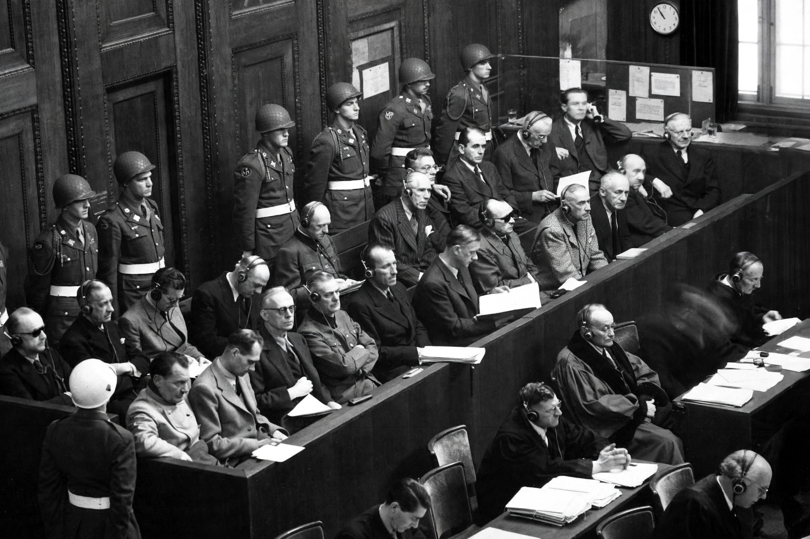

From Wikipedia, the free encyclopedia

The defendants' dock at the Nuremberg trials, where "crimes against peace" — the planning and waging of aggressive war — were prosecuted for the first time.A crime of aggression is the planning, preparation, initiation, or execution, by a person in a position to control or direct the political or military action of a state, of an act of aggression which, by its character, gravity, and scale, constitutes a manifest violation of the Charter of the United Nations. It is one of the four core crimes under the Rome Statute of the International Criminal Court, alongside genocide, crimes against humanity, and war crimes, and is a leadership crime: only those who direct a state's action can commit it.
Aggression was criminalised as a "crime against peace" in the 1945 London Charter, and the Nuremberg Tribunal called it "the supreme international crime differing only from other war crimes in that it contains within itself the accumulated evil of the whole". After 1945, agreement on a definition stalled for decades. The UN General Assembly adopted a definition of aggression for state acts in Resolution 3314 (1974). At the Rome Conference in 1998 the crime was included in the ICC Statute, but the Court could not exercise jurisdiction until a definition and conditions were agreed.
The definition was adopted at the Kampala Review Conference in 2010 as Article 8 bis, drawing the list of acts of aggression from Resolution 3314 (invasion, bombardment, blockade, attacks on armed forces, and similar acts). The amendments entered into force for ratifying states from 2013, and the Assembly of States Parties activated the ICC's jurisdiction with effect from 17 July 2018. The jurisdiction is narrower than for the other core crimes: in the state-referral and proprio motu routes, the Court cannot exercise jurisdiction over aggression committed by nationals of, or on the territory of, states that have not ratified the amendments or that have filed an opt-out declaration, and it has no jurisdiction over non-party states on those routes; the UN Security Council may refer a situation regardless.
Because of these limits, proposals after Russia's full-scale invasion of Ukraine in 2022 focused on creating a special tribunal for the crime of aggression against Ukraine, since the ICC cannot exercise aggression jurisdiction in that situation through its ordinary routes.